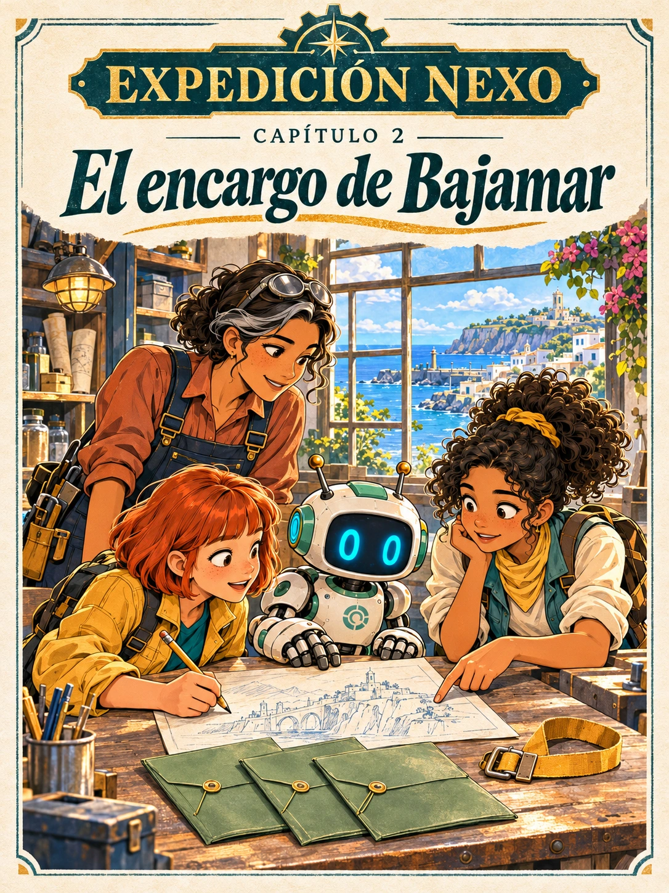

1 · El encargo
Páginas 7–8 · Preguntas 1–4
Leer cómicTexto accesibleLee el cómic completo en la biblioteca del curso o avanza por cuatro bloques. Las preguntas te ayudan a explicar las decisiones de diseño.

Páginas 7–8 · Preguntas 1–4
Leer cómicTexto accesiblePáginas 9–10 · Preguntas 5–8
Leer cómicTexto accesiblePáginas 11–12 · Preguntas 9–12
Leer cómicTexto accesiblePáginas 13–14 · Preguntas 13–16
Leer cómicTexto accesiblePuedes leer y responder sin entrar en el juego. Los cuestionarios de EVAGD se facilitarán en el aula virtual.